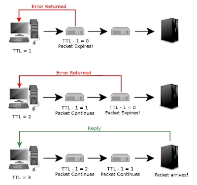

|
 Главная
Главная Макросы для Excel
Макросы для Excel Макросы для Word
Макросы для Word Приложения для Windows
Приложения для Windows Скрипты Python
Скрипты Python Отправить обращение
Отправить обращение Справочник команд
Справочник командTTL Editor
TTL Editor - программа, созданная для того, чтобы изменить значение TTL на компьютере без применения ручного редактирования реестра: её пользовательский интерфейс позволит "в два клика" любому пользователю, автоматически выполнить алгоритм редактирования.
TTL – это специальный показатель, который встроен в каждое устройство, способное выходить в интернет. Сама аббревиатура расшифровывается как Time To Live – «время жизни IP-пакета». Это набор данных, который передается от пользователя к серверу и обратно. Время в данном случае означает то, сколько может просуществовать пакет без потери информации. Изначально TTL хотели измерять в секундах, откуда и пошло определение. Значение TTL в компьютерных сетях находится в диапазоне от 0 до 255. Перемещаясь между различными маршрутизаторами, параметр постоянно меняется. Для владельцев устройств на базе iOS и Android начальное значение обычно равняется 64, для Windows – 128. Каждый переход через беспроводной канал уменьшает показатель на 1 единицу. Если произойдет множество скачков от одного клиента к другому, значение становится равным 0 – в таком случае все данные в пакете уничтожаются.
Точное число значений TTL всегда перенаправляется провайдеру, который всегда может узнать, был ли пропущен трафик через сторонние устройства или нет. Когда владелец смартфона раздает интернет, его значение TTL уменьшается на единицу и равняется 63. Это сразу же становится известно оператору, который в свою очередь начинает принимать меры – обычно взимает дополнительную плату или перекрывает доступ в интернет - таким образом, сотовые операторы могут спокойно контролировать раздачу интернета своих клиентов и устранить с их стороны какие-либо махинации с интернетом.
Чтобы обойти блокировку оператора, необходимо увеличить значение TTL на 1 единицу. Так мы получим увеличенное число, которое будет снижаться до исходного. В таком случае оператор не сможет заподозрить клиента в раздаче интернета.
Алгоритм использования программы:
- Открыть программу
- Набрать в поле ввода нужное значение TTL (чтобы совпадало вместе с раздающим устройством + 1)
- Перезагрузить компьютер
Также с помощью кнопки "Сбросить TTL" можно полностью удалить значение TTL, чтобы вернуться к первоначальным настройкам. Что после сброса значения, что после установки значения, также нужно перезагрузить компьютер, чтобы изменения вступили в силу.
| Версия | Дата разработки | Платформа .NET | Разрядность | Тип | Размер | Ссылка |
|---|---|---|---|---|---|---|
| 1.0 | 04.02.2024 | .NET Framework 4.0 | x86 | .exe | 16 KB | Скачать |
©Coryright 2024 | Felix Petrov